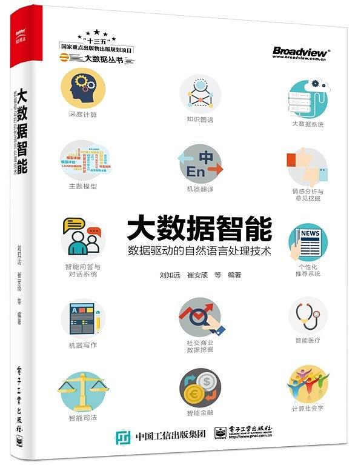

|  |
大数据智能：数据驱动的自然语言处理技术（第2版）
编者：刘知远，崔安颀
作者：张开旭、刘知远、韩文弢、赵鑫、苏劲松、崔安颀、张永锋、严睿、汤步洲、涂存超、丁效
北京：电子工业出版社，2020年1月第2版，368页，ISBN：9787121375385
欢迎读者朋友的反馈与建议：liuzy@tsinghua.edu.cn。
|
内容简介
本书是介绍大数据智能、人工智能技术的科普书籍，旨在让更多人了解和学习互联网时代的人工智能技术——自然语言处理技术，让大数据智能技术更好地为我们服务。全书包括大数据智能基础、技术和应用三部分，共14章。基础部分有3章：第1章以深度学习为例介绍大数据智能的计算框架；第2章以知识图谱为例介绍大数据智能的知识库；第3章介绍大数据的计算处理系统。技术部分有6章，分别介绍机器翻译、主题模型、情感分析与意见挖掘、智能问答与对话系统、个性化推荐、机器写作。应用部分有5章，分别介绍社交商业数据挖掘、智慧医疗、智慧司法、智慧金融、计算社会科学。本书后记部分为读者追踪大数据智能的学术资料提供了建议。
作者简介
- 刘知远 清华大学计算机系副教授、博士生导师。主要研究方向为自然语言处理和知识图谱。2011年获得清华大学博士学位，在人工智能领域著名国际期刊和会议上发表相关论文60余篇，Google Scholar统计引用超过4,000次。曾获清华大学优秀博士论文、中国人工智能学会优秀博士论文、清华大学优秀博士后、中文信息学会青年创新奖，入选《麻省理工科技评论》“35岁以下科技创新35人”中国区榜单、中国科协青年人才托举工程、CCF青年学者提升计划。担任中文信息学会青年工作委员会副主任，中文信息学会社会媒体处理专委会秘书长，ACL、EMNLP、COLING等著名国际会议领域主席。
- 崔安颀 薄言RSVP.ai联合创始人、AI负责人，从事智能对话的技术研发和商业化应用。2013年获得清华大学博士学位。曾访问美国卡耐基梅隆大学、新加坡国立大学，在加拿大滑铁卢大学担任博士后研究员。研究方向包括社交媒体情感分析、智能问答、数据挖掘等，发表相关著作20余篇，积累了丰富的科研和商业应用经验。参与研发薄言“轻语”企业助手平台、“薄言豆豆”智能机器人以及语义解析、机器问答、对话闲聊等算法引擎，将自然语言处理技术应用在智能家居、企业助手、智能客服等场景中。
- 张开旭 清华大学计算机系博士，研究方向为自然语言处理，THULAC工具草创者，SIGHAN 2012中文分词评测冠军，百度搜索中文CRF模块代码重构者，微信搜索DSSM模块开发者，腾讯围棋AI“绝艺”研发者。现供职于腾讯，尝试用BERT“搞事情”。
- 韩文弢 清华大学计算机系助理研究员。主要研究方向为大数据系统和类脑计算系统。2015年获得清华大学博士学位，在计算机系统相关国际期刊和会议上发表相关论文10余篇。曾获得西贝尔学者、NOI 2003金牌等荣誉和奖项。担任CCF NOI科学委员会委员。
- 赵 鑫 中国人民大学信息学院副教授、博士生导师。主要研究方向为数据挖掘和自然语言处理。2014年获得北京大学博士学位，在数据挖掘及其相关领域的著名国际期刊和会议上发表相关论文70余篇，曾获得CIKM 2017z佳短文提名及AIRS 2017z佳论文奖，Google Scholar统计引用2,800余次。曾获微软亚洲学者、北京大学优秀博士论文奖、中国人民大学杰出学者等荣誉称号，入选第二届CCF青年人才发展计划。长期担任国内外著名期刊和会议的评审。
- 苏劲松 厦门大学信息学院副教授、博士生导师。主要研究方向为自然语言处理和机器翻译。2011年获得中国科学院计算技术研究所博士学位，在人工智能、自然语言处理领域的著名国际期刊和会议上发表相关论文60余篇。担任CCF中文信息处理青年工作委员会常务委员，中文信息学会青年工作委员会委员，福建省人工智能学会理事，自然语言处理国际会议 NLPCC2018、EMNLP2019领域主席。
- 张永锋 罗格斯大学助理教授，主要研究方向为信息检索、推荐系统、机器学习及互联网经济。
- 严 睿 北京大学助理教授、研究员、博士生导师，曾任百度公司资深研究员，华中师范大学与中央财经大学客座教授与校外导师。主持研发了多个开放领域对话系统和服务类对话系统，发表高水平研究论文100余篇，担任多个学术会议（KDD、IJCAI、SIGIR、ACL、WWW、AAAI、CIKM、EMNLP等）的（资深）程序委员会委员及审稿人。
- 汤步洲 哈尔滨工业大学（深圳）计算机科学与技术学院副教授、博士生导师。主要研究方向为自然语言处理、知识图谱、医学信息处理、医疗支持决策。2011年获得哈尔滨工业大学博士学位，毕业后先后赴美国范德堡大学和德州大学休斯敦医学科学中心以博士后研究员身份从事研究工作。在人工智能、医学信息学领域著名国际期刊和会议上发表相关论文80余篇，Google Scholar统计引用1,300余次。多次在相关领域国际公开评测中获得冠军。
- 涂存超 清华大学计算机系博士后。主要研究方向为自然语言处理和法律智能。2018年获得清华大学博士学位。在人工智能及自然语言处理著名国际期刊和会议上发表相关论文10余篇。获得清华大学优秀博士毕业生、清华大学优秀博士论文奖、北京市优秀博士毕业生等荣誉，入选“博士后创新人才支持计划”。
- 丁 效 哈尔滨工业大学助理研究员、硕士生导师。主要研究方向为人工智能、自然语言处理、社会计算和事理图谱。2016年获得哈尔滨工业大学博士学位，已在AAAI、IJCAI、ACL、EMNLP、NAACL、COLING等人工智能领域的著名国际期刊和会议上发表相关论文20余篇。承担国家自然科学基金青年项目等省部级以上项目四项，参与国家重大科技基础设施建设项目、“新一代人工智能”重大项目、国家自然科学基金重点项目等多个科研项目。荣获全国青年人工智能创新创业大会三等奖、第五届全国青年计算语言学研讨会优秀论文奖等荣誉。
图书目录
- 前言：大数据时代与人工智能
- 第1章：深度学习——机器大脑的结构
- 第2章：知识图谱——机器大脑中的知识库
- 第3章：大数据系统——大数据背后的支撑技术
- 第4章：主题模型——机器的智能摘要利器
- 第5章：机器翻译——机器如何跨越语言障碍
- 第6章：情感分析与意见挖掘——计算机如何了解人类情感
- 第7章：智能问答与对话系统——智能助手是如何炼成的
- 第8章：个性化推荐系统——如何了解电脑背后的TA
- 第9章：机器写作——从分析到创造
- 第10章：社交商业数据挖掘——从用户数据挖掘到商业智能应用
- 第11章：智慧医疗——信息技术在医疗领域应用的结晶
- 第12章：智慧司法——智能技术促进司法公正
- 第13章：智能金融——机器金融大脑
- 第14章：计算社会学——透过大数据了解人类社会
- 后记：如何追踪大数据智能领域的最新学术资料
Last update: 27 Mar, 2019.